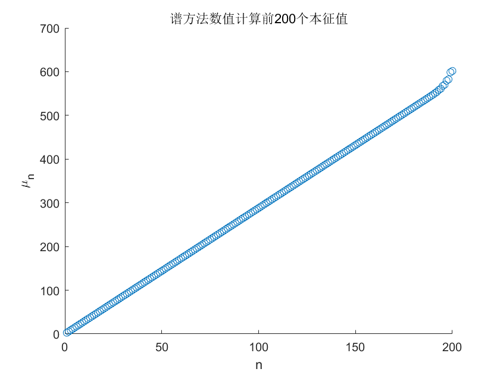
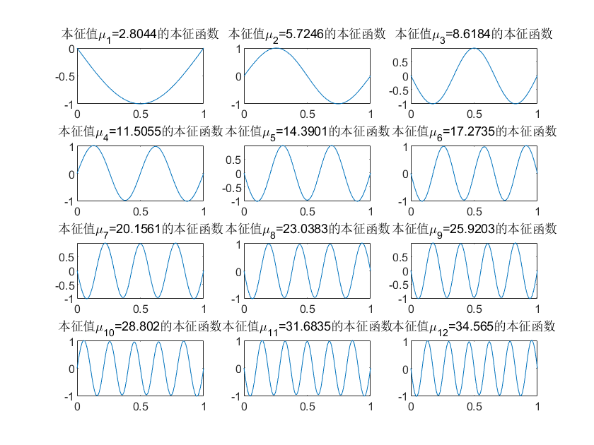
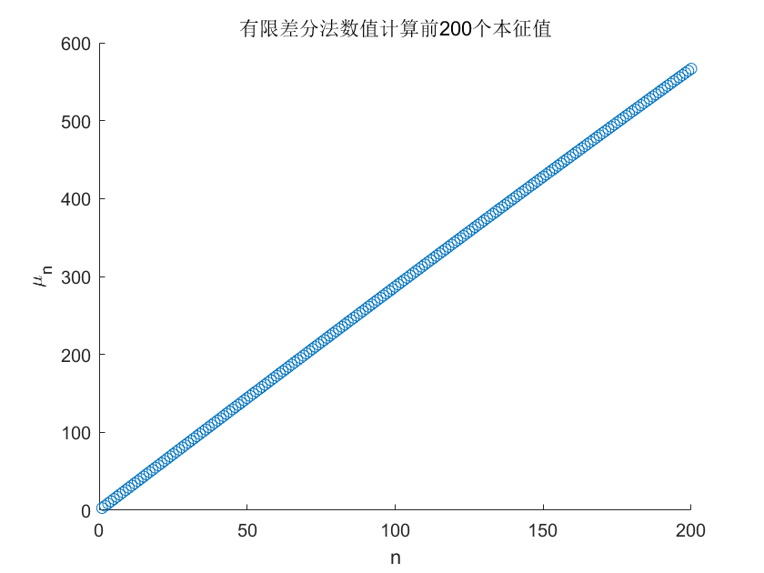
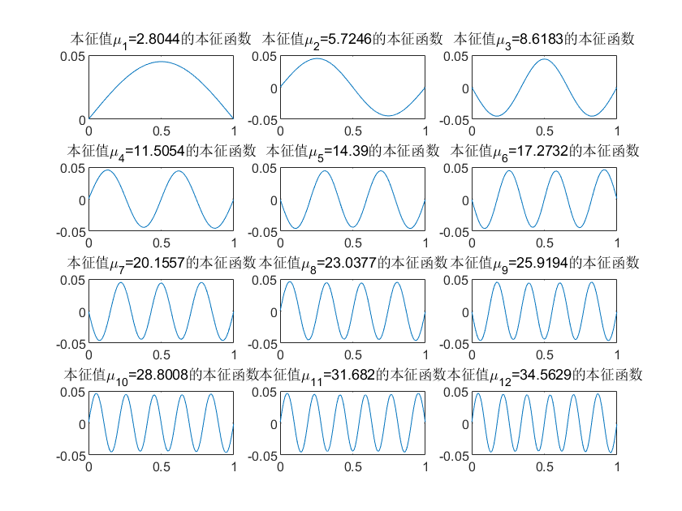
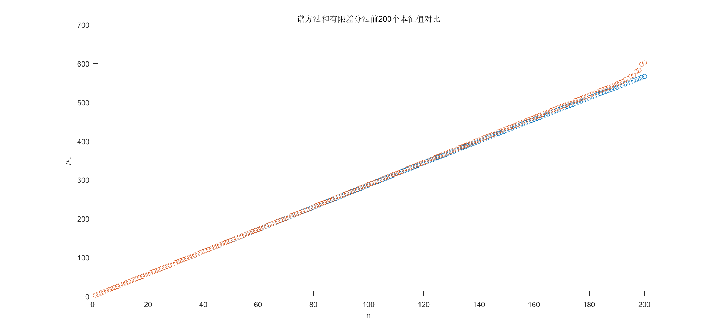

小课题1
问题描述
一维弦振动的的运动方程为：
ρ U t t − T ∇ 2 U = 0 \rho U_{tt}-T\nabla^2 U
=0 ρ U tt − T ∇ 2 U = 0
其中，U ( x , t ) U(x,t) U ( x , t ) t t t x x x
设 U ( x , t ) U(x,t) U ( x , t ) u ( x ) u(x) u ( x ) T ~ ( t ) \tilde{T}(t) T ~ ( t )
U ( x , t ) = u ( x ) T ~ ( t ) U(x,t)
=u(x)\tilde{T}(t) U ( x , t ) = u ( x ) T ~ ( t )
分离变量可得空间部分 u ( x ) u(x) u ( x )
T ρ ∇ 2 u + μ 2 u = 0 \frac{T}{\rho}\nabla^2 u+\mu^2 u
=0 ρ T ∇ 2 u + μ 2 u = 0
已知条件 T = T 0 = 1 , ρ = ρ 0 + ρ 1 , ρ 0 = 1 , ρ 1 = 0.3 sin π ( x − a ) b − a \displaystyle{T=T_0=1,\rho=\rho_0+\rho_1,\rho_0=1,\rho_1=0.3\sin\frac{\pi(x-a)}{b-a} } T = T 0 = 1 , ρ = ρ 0 + ρ 1 , ρ 0 = 1 , ρ 1 = 0.3 sin b − a π ( x − a ) 谱方法 和有限差分法 在边界条件 u ∣ ∂ D = 0 {u\big|_{\partial D} }=0 u ∂ D = 0
问题重述
令 f ( x ) = 1 1 + 0.3 sin π ( x − a ) b − a \displaystyle{f(x)=\frac{1}{1+0.3\sin\frac{\pi(x-a)}{b-a}} } f ( x ) = 1 + 0.3 sin b − a π ( x − a ) 1
在边界条件 u ∣ ∂ D = 0 u\big|_{\partial D}=0 u ∂ D = 0
f ( x ) ∇ 2 u + μ 2 u = 0 f(x)\nabla^2 u+\mu^2 u
=0 f ( x ) ∇ 2 u + μ 2 u = 0
的本征值和本征向量。
谱方法求解
理论推导
已知方程
∇ 2 u + μ 2 u = 0 , u ∈ D = [ a , b ] , u ∣ ∂ D = 0 \nabla^2 u+\mu^2 u
=0,~~u\in D=[a,b],~~u\big|_{\partial D}=0 ∇ 2 u + μ 2 u = 0 , u ∈ D = [ a , b ] , u ∂ D = 0
的本征解为：
{ φ n = sin n π b − a ( x − a ) , μ n = n π b − a , n = 1 , 2 , ⋯ } \bigg\{\varphi_n=\sin\frac{n\pi}{b-a}(x-a),~~\mu_n=\frac{n\pi}{b-a},~~n=1,2,\cdots \bigg\} { φ n = sin b − a nπ ( x − a ) , μ n = b − a nπ , n = 1 , 2 , ⋯ }
则 { φ n } \{\varphi_n \} { φ n }
回到方程
f ( x ) ∇ 2 u + μ 2 u = 0 f(x)\nabla^2 u+\mu^2 u
=0 f ( x ) ∇ 2 u + μ 2 u = 0
其解可在 { φ n } \{\varphi_n \} { φ n }
u = ∑ n = 1 ∞ C n φ n u
=\sum_{n=1}^{\infty} C_n\varphi_n u = n = 1 ∑ ∞ C n φ n
计算 ∇ 2 u \nabla^2 u ∇ 2 u
∇ 2 u = d 2 d x 2 ∑ n = 1 ∞ C n φ n = d 2 d x 2 ∑ n = 1 ∞ C n sin n π b − a ( x − a ) = ∑ n = 1 ∞ − C n ( n π b − a ) 2 sin n π b − a ( x − a ) = − ∑ n = 1 ∞ C n ( n π b − a ) 2 φ n \begin{aligned}
\nabla^2 u
&=\frac{\mathrm{d}^2}{\mathrm{d}x^2}\sum_{n=1}^{\infty} C_n\varphi_n \\
&=\frac{\mathrm{d}^2}{\mathrm{d}x^2}\sum_{n=1}^{\infty} C_n\sin\frac{n\pi}{b-a}(x-a) \\
&=\sum_{n=1}^{\infty}-C_n\bigg( \frac{n\pi}{b-a} \bigg)^2 \sin\frac{n\pi}{b-a}(x-a) \\
&=-\sum_{n=1}^{\infty}C_n\bigg( \frac{n\pi}{b-a} \bigg)^2\varphi_n
\end{aligned} ∇ 2 u = d x 2 d 2 n = 1 ∑ ∞ C n φ n = d x 2 d 2 n = 1 ∑ ∞ C n sin b − a nπ ( x − a ) = n = 1 ∑ ∞ − C n ( b − a nπ ) 2 sin b − a nπ ( x − a ) = − n = 1 ∑ ∞ C n ( b − a nπ ) 2 φ n
将上面两式代回方程 f ( x ) ∇ 2 u + μ 2 u = 0 f(x)\nabla^2 u+\mu^2 u=0 f ( x ) ∇ 2 u + μ 2 u = 0
f ( x ) ∑ n = 1 ∞ C n ( n π b − a ) 2 φ n = μ 2 ∑ n = 1 ∞ C n φ n f(x)\sum_{n=1}^{\infty}C_n\bigg( \frac{n\pi}{b-a} \bigg)^2\varphi_n
=\mu^2\sum_{n=1}^{\infty} C_n\varphi_n f ( x ) n = 1 ∑ ∞ C n ( b − a nπ ) 2 φ n = μ 2 n = 1 ∑ ∞ C n φ n
上式两边同乘 φ m ∗ \varphi_m^* φ m ∗ x x x [ a , b ] [a,b] [ a , b ]
∫ a b φ m ∗ [ f ( x ) ∑ n = 1 ∞ C n ( n π b − a ) 2 φ n ] d x = ∫ a b φ m ∗ [ μ 2 ∑ n = 1 ∞ C n φ n ] d x \int_{a}^{b} \varphi_m^*\bigg[ f(x)\sum_{n=1}^{\infty}C_n\bigg( \frac{n\pi}{b-a} \bigg)^2\varphi_n \bigg] \mathrm{d}x
=\int_a^b\varphi_m^*\bigg[ \mu^2\sum_{n=1}^{\infty} C_n\varphi_n \bigg] \mathrm{d}x ∫ a b φ m ∗ [ f ( x ) n = 1 ∑ ∞ C n ( b − a nπ ) 2 φ n ] d x = ∫ a b φ m ∗ [ μ 2 n = 1 ∑ ∞ C n φ n ] d x
先化简左边：
左边 = ∫ a b φ m ∗ [ f ( x ) ∑ n = 1 ∞ C n ( n π b − a ) 2 φ n ] d x = ∑ n = 1 ∞ C n ( n π b − a ) 2 ∫ a b f ( x ) φ m ∗ ( x ) φ n ( x ) d x ≡ ∑ n = 1 ∞ C n ( n π b − a ) 2 M m n \begin{aligned}
左边
&=\int_{a}^{b} \varphi_m^*\bigg[ f(x)\sum_{n=1}^{\infty}C_n\bigg( \frac{n\pi}{b-a} \bigg)^2\varphi_n \bigg] \mathrm{d}x \\
&=\sum_{n=1}^{\infty} C_n \bigg( \frac{n\pi}{b-a} \bigg)^2 \int_a^b f(x)\varphi_m^*(x)\varphi_n(x)\mathrm{d}x \\
&\equiv \sum_{n=1}^{\infty} C_n \bigg( \frac{n\pi}{b-a} \bigg)^2M_{mn}
\end{aligned} 左边 = ∫ a b φ m ∗ [ f ( x ) n = 1 ∑ ∞ C n ( b − a nπ ) 2 φ n ] d x = n = 1 ∑ ∞ C n ( b − a nπ ) 2 ∫ a b f ( x ) φ m ∗ ( x ) φ n ( x ) d x ≡ n = 1 ∑ ∞ C n ( b − a nπ ) 2 M mn
其中，
M m n ≡ ∫ a b f ( x ) φ m ∗ ( x ) φ n ( x ) d x M_{mn}
\equiv \int_a^b f(x)\varphi_m^*(x)\varphi_n(x)\mathrm{d}x \\ M mn ≡ ∫ a b f ( x ) φ m ∗ ( x ) φ n ( x ) d x
再化简右边：
右边 = ∫ a b φ m ∗ [ μ 2 ∑ n = 1 ∞ C n φ n ] d x = μ 2 ∑ n = 1 ∞ C n ∫ a b φ m ∗ ( x ) φ n ( x ) d x = μ 2 ∑ n = 1 ∞ C n δ m n N m = μ 2 C m N m \begin{aligned}
右边
&=\int_a^b\varphi_m^*\bigg[ \mu^2\sum_{n=1}^{\infty} C_n\varphi_n \bigg] \mathrm{d}x \\
&=\mu^2 \sum_{n=1}^{\infty} C_n \int_a^b \varphi_m^*(x)\varphi_n(x)\mathrm{d}x \\
&=\mu^2 \sum_{n=1}^{\infty} C_n \delta_{mn}N_{m} \\
&=\mu^2 C_m N_{m}
\end{aligned} 右边 = ∫ a b φ m ∗ [ μ 2 n = 1 ∑ ∞ C n φ n ] d x = μ 2 n = 1 ∑ ∞ C n ∫ a b φ m ∗ ( x ) φ n ( x ) d x = μ 2 n = 1 ∑ ∞ C n δ mn N m = μ 2 C m N m
其中，
N m ≡ ∫ a b φ m ∗ ( x ) φ m ( x ) d x \begin{aligned}
N_{m}
\equiv \int_a^b\varphi_m^*(x)\varphi_m(x)\mathrm{d}x
\end{aligned} N m ≡ ∫ a b φ m ∗ ( x ) φ m ( x ) d x
于是：
∑ n = 1 ∞ C n ( n π b − a ) 2 M m n = μ 2 C m N m \sum_{n=1}^{\infty} C_n \bigg( \frac{n\pi}{b-a} \bigg)^2M_{mn}
=\mu^2 C_m N_{m} n = 1 ∑ ∞ C n ( b − a nπ ) 2 M mn = μ 2 C m N m
即：
∑ n = 1 ∞ ( n π b − a ) 2 M m n N m ⋅ C n = μ 2 C m \sum_{n=1}^{\infty} \bigg( \frac{n\pi}{b-a} \bigg)^2\frac{M_{mn}}{N_m} \cdot C_n
=\mu^2 C_m n = 1 ∑ ∞ ( b − a nπ ) 2 N m M mn ⋅ C n = μ 2 C m
令 M ~ m n = ( n π b − a ) 2 M m n N m \displaystyle{\tilde{M}_{mn}=\bigg( \frac{n\pi}{b-a} \bigg)^2\frac{M_{mn}}{N_m} } M ~ mn = ( b − a nπ ) 2 N m M mn
∑ n = 1 ∞ M ~ m n C n = μ 2 C m \sum_{n=1}^{\infty} \tilde{M}_{mn} C_n
=\mu^2 C_m n = 1 ∑ ∞ M ~ mn C n = μ 2 C m
上式等价于矩阵方程：
M ~ C = μ 2 C \boxed{
\bold{\tilde{M}}\bold{C}
=\mu^2\bold{C}
} M ~ C = μ 2 C
其中，矩阵 M ~ \bold{\tilde{M}} M ~ M ~ m n \bold{\tilde{M}}_{mn} M ~ mn
M ~ m n = M ~ m n = ( n π b − a ) 2 M m n N m = ( n π b − a ) 2 ∫ a b f ( x ) φ m ∗ ( x ) φ n ( x ) d x ∫ a b φ m ∗ ( x ) φ m ( x ) d x \bold{\tilde{M}}_{mn}
=\tilde{M}_{mn}
=\bigg( \frac{n\pi}{b-a} \bigg)^2\frac{M_{mn}}{N_m}=\bigg( \frac{n\pi}{b-a} \bigg)^2 \frac{\int_a^b f(x)\varphi_m^*(x)\varphi_n(x)\mathrm{d}x}{\int_a^b\varphi_m^*(x)\varphi_m(x)\mathrm{d}x} M ~ mn = M ~ mn = ( b − a nπ ) 2 N m M mn = ( b − a nπ ) 2 ∫ a b φ m ∗ ( x ) φ m ( x ) d x ∫ a b f ( x ) φ m ∗ ( x ) φ n ( x ) d x
f ( x ) = 1 1 + 0.3 sin π ( x − a ) b − a , φ n ( x ) = sin n π b − a ( x − a ) f(x)
=\frac{1}{1+0.3\sin\frac{\pi(x-a)}{b-a}},~~
\varphi_n(x)
=\sin\frac{n\pi}{b-a}(x-a) f ( x ) = 1 + 0.3 sin b − a π ( x − a ) 1 , φ n ( x ) = sin b − a nπ ( x − a )
向量 C \bold{C} C C m \bold{C}_m C m
C m = C m \bold{C}_m
=C_m C m = C m
矩阵方程
M ~ C = μ 2 C \bold{\tilde{M}}\bold{C}
=\mu^2\bold{C} M ~ C = μ 2 C
是矩阵 M ~ \bold{\tilde{M}} M ~
只要求出本征向量 C \bold{C} C u = ∑ n = 1 ∞ C n φ n \displaystyle{u=\sum_{n=1}^{\infty} C_n\varphi_n } u = n = 1 ∑ ∞ C n φ n
数值求解
设置弦的端点分别为 a = 0 , b = 0 a=0,b=0 a = 0 , b = 0 u = ∑ n = 1 ∞ C n φ n \displaystyle{u=\sum_{n=1}^{\infty} C_n\varphi_n } u = n = 1 ∑ ∞ C n φ n 200 200 200 200 200 200 12 12 12
Matlab 代码如下：
a = 0;
b = 1;
f = @(x) 1./(1+0.3.*sin(pi.*(x-a)./(b-a)));
phi = @(n, x) sin(n.*pi./(b-a).*(x-a));
n = 200;
M = zeros(n, n);
for i = 1:n
for j = 1:n
int_func = @(x) f(x).*phi(i, x).*phi(j, x);
tmp_1 = integral(int_func, a, b);
tmp_2 = integral(@(x) phi(i, x).^2, a, b);
M(i, j) = (j.*pi./(b-a)).^2 * tmp_1 ./ tmp_2;
end
end
[V, D] = eig(M);
[mu, index] = sort(sqrt(diag(D)));
V = V(:,index);
x = 1:n;
y = zeros(1, n);
for i = 1:n
y(i) = mu(i);
end
figure(1);
scatter(x, y);
xlabel('n');
ylabel('\mu_n');
title('谱方法数值计算前200个本征值');
func_arr = cell(n, 1);
for i = 1:n
func_arr{i} = @(x) phi(i, x);
end
figure(2);
for i = 1:12
subplot(4, 3, i);
u = @(x) 0;
for j =1:n
u = @(x) u(x) + func_arr{j}(x) * V(j, i);
end
x = a:0.01:b;
y = u(x);
plot(x, y);
title(['本征值\mu_{',num2str(i), '}=',num2str(mu(i)), '的本征函数']);
hold on;
end
绘图如下：

可以看到，谱方法给出的 200 200 200 12 12 12
有限差分法求解
差分原理
区间 x ∈ [ a , b ] x\in[a,b] x ∈ [ a , b ] N + 1 N+1 N + 1 x i , i = 0 , 1 , 2 , ⋯ , N x_i,~~i=0,1,2,\cdots,N x i , i = 0 , 1 , 2 , ⋯ , N
Δ x = b − a N \Delta x
=\frac{b-a}{N} Δ x = N b − a
于是：
x i = a + i Δ x x_i
=a+i\Delta x x i = a + i Δ x
设第 i i i u i u_i u i
∇ 2 u ∣ i = d 2 u d x 2 ∣ i ≈ u i + 1 − u i Δ x − u i − u i − 1 Δ x Δ x = u i + 1 + u i − 1 − 2 u i ( Δ x ) 2 \begin{aligned}
\nabla^2 u\big|_{i}
&=\frac{\mathrm{d}^2 u}{\mathrm{d}x^2}\bigg|_{i} \\
&\approx \frac{\frac{u_{i+1}-u_{i}}{\Delta x}-\frac{u_{i}-u_{i-1}}{\Delta x}}{\Delta x} \\
&=\frac{u_{i+1}+u_{i-1}-2u_i}{(\Delta x)^2}
\end{aligned} ∇ 2 u i = d x 2 d 2 u i ≈ Δ x Δ x u i + 1 − u i − Δ x u i − u i − 1 = ( Δ x ) 2 u i + 1 + u i − 1 − 2 u i
f ( x ) = 1 1 + 0.3 sin π ( x − a ) b − a ⟹ f ( x ) ∣ i = 1 1 + 0.3 sin π ( x i − a ) b − a ≡ f i f(x)
=\frac{1}{1+0.3\sin\frac{\pi(x-a)}{b-a}}
\Longrightarrow
f(x)\bigg|_{i}
=\frac{1}{1+0.3\sin\frac{\pi(x_i-a)}{b-a}}
\equiv f_i f ( x ) = 1 + 0.3 sin b − a π ( x − a ) 1 ⟹ f ( x ) i = 1 + 0.3 sin b − a π ( x i − a ) 1 ≡ f i
于是方程 f ( x ) ∇ 2 u + μ 2 u = 0 f(x)\nabla^2 u+\mu^2 u=0 f ( x ) ∇ 2 u + μ 2 u = 0
− f i ⋅ u i + 1 + u i − 1 − 2 u i ( Δ x ) 2 = μ 2 u i , ( i = 1 , 2 , ⋯ , N − 1 ) -f_i\cdot \frac{u_{i+1}+u_{i-1}-2u_i}{(\Delta x)^2}
=\mu^2 u_i,~~(i=1,2,\cdots,N-1) − f i ⋅ ( Δ x ) 2 u i + 1 + u i − 1 − 2 u i = μ 2 u i , ( i = 1 , 2 , ⋯ , N − 1 )
边界条件 u ∣ ∂ D = 0 u\big|_{\partial D}=0 u ∂ D = 0
u 0 = u N = 0 u_0
=u_N
=0 u 0 = u N = 0
改写为矩阵形式：
− 1 ( Δ x ) 2 [ f 1 f 2 ⋱ f N − 1 ] [ − 2 1 1 − 2 1 1 − 2 1 ⋱ ⋱ ⋱ 1 − 2 1 1 − 2 ] [ u 1 u 2 ⋮ u N − 2 u N − 1 ] = μ 2 [ u 1 u 2 ⋮ u N − 2 u N − 1 ] -\frac{1}{(\Delta x)^2}
\begin{bmatrix}
f_1 \\
&f_2 \\
&& \ddots \\
&&& f_{N-1}
\end{bmatrix}
\begin{bmatrix}
-2 &1 \\
1 &-2 &1 \\
&1 &-2 &1 \\
& &\ddots &\ddots &\ddots \\
& & &1 &-2 &1 \\
& & & &1 &-2
\end{bmatrix}
\begin{bmatrix}
u_1 \\
u_2 \\
\vdots \\
u_{N-2} \\
u_{N-1}
\end{bmatrix}
=\mu^2
\begin{bmatrix}
u_1 \\
u_2 \\
\vdots \\
u_{N-2} \\
u_{N-1}
\end{bmatrix} − ( Δ x ) 2 1 f 1 f 2 ⋱ f N − 1 − 2 1 1 − 2 1 1 − 2 ⋱ 1 ⋱ 1 ⋱ − 2 1 1 − 2 u 1 u 2 ⋮ u N − 2 u N − 1 = μ 2 u 1 u 2 ⋮ u N − 2 u N − 1
这恰是一个矩阵的特征方程，可以解出本征值和本征向量。
数值求解
设置弦的端点分别为 a = 0 , b = 0 a=0,b=0 a = 0 , b = 0 b − a = 1 b-a=1 b − a = 1 N = 1000 N=1000 N = 1000 N + 1 = 1001 N+1=1001 N + 1 = 1001 200 200 200 12 12 12
Matlab 代码如下：
N = 1000;
a = 0;
b = 1;
delta_x = (b-a)./N;
x = linspace(a, b, N+1);
x = x(2:N);
y = 1 ./ (1+0.3.*sin(pi.*(x-a)./(b-a)));
m_1 = diag(y, 0);
m_2 = diag( -2.*ones(N-1, 1), 0 ) + diag( ones(N-2, 1), -1 ) + diag( ones(N-2, 1), 1 );
M = -1./delta_x^2.*m_1*m_2;
[V, D] = eig(M);
[mu, index] = sort(sqrt(diag(D)));
V = V(:,index);
n = 200;
x_1 = 1:n;
y_1 = mu(1:n);
figure(1);
scatter(x_1, y_1);
xlabel('n');
ylabel('\mu_n');
title('有限差分法数值计算前200个本征值');
figure(2);
for i =1:12
subplot(4, 3, i);
plot(x, V(:,i));
title(['本征值\mu_{', num2str(i), '}=', num2str(mu(i)), '的本征函数']);
end
绘图如下：

可以看到，有限差分法给出的前 200 200 200 12 12 12
谱方法与有限差分法的对比
将谱方法和有限差分法求得的前 200 200 200

可以看到，两种方法分别求解的本征值中，只有大约前 40 % 40\% 40%
总结
本文分别用谱方法和有限差分法计算了方程
f ( x ) ∇ 2 u + μ 2 u = 0 , f ( x ) = 1 1 + 0.3 sin π ( x − a ) b − a f(x)\nabla^2 u+\mu^2 u
=0,~~f(x)=\frac{1}{1+0.3\sin\frac{\pi(x-a)}{b-a}} f ( x ) ∇ 2 u + μ 2 u = 0 , f ( x ) = 1 + 0.3 sin b − a π ( x − a ) 1
在第一类齐次边界条件下的前 200 200 200 12 12 12
谱方法将解 u u u { φ n = sin n π b − a ( x − a ) , n = 1 , 2 , ⋯ } \displaystyle{\bigg\{\varphi_n=\sin\frac{n\pi}{b-a}(x-a),~~n=1,2,\cdots \bigg\} } { φ n = sin b − a nπ ( x − a ) , n = 1 , 2 , ⋯ } u = ∑ n = 1 ∞ C n φ n \displaystyle{u=\sum_{n=1}^{\infty} C_n \varphi_n } u = n = 1 ∑ ∞ C n φ n C n C_n C n
然而在实际求解过程中，由于算力不足，n n n 200 200 200
有限差分法将连续的问题离散化，将连续的函数或导数转化为离散的点和有限差分近似。我们先将连续的一维区域划分为离散的一维网格，然后在网格上建立差分方程，将微分方程转化为代数方程组。最后，通过数值方法求解这个代数方程组，得到问题的数值解。
有限差分法的误差主要来源于离散步长 Δ x = ( b − a ) / N \Delta x=(b-a)/N Δ x = ( b − a ) / N 200 200 200 40 % 40\% 40% 60 % 60\% 60%
总的来说，谱方法可以提供高精度的解，但当基函数的数量很大时，计算量也会很大，程序运行速度较慢；有限差分法简单直观，计算量小，但精度稍差。